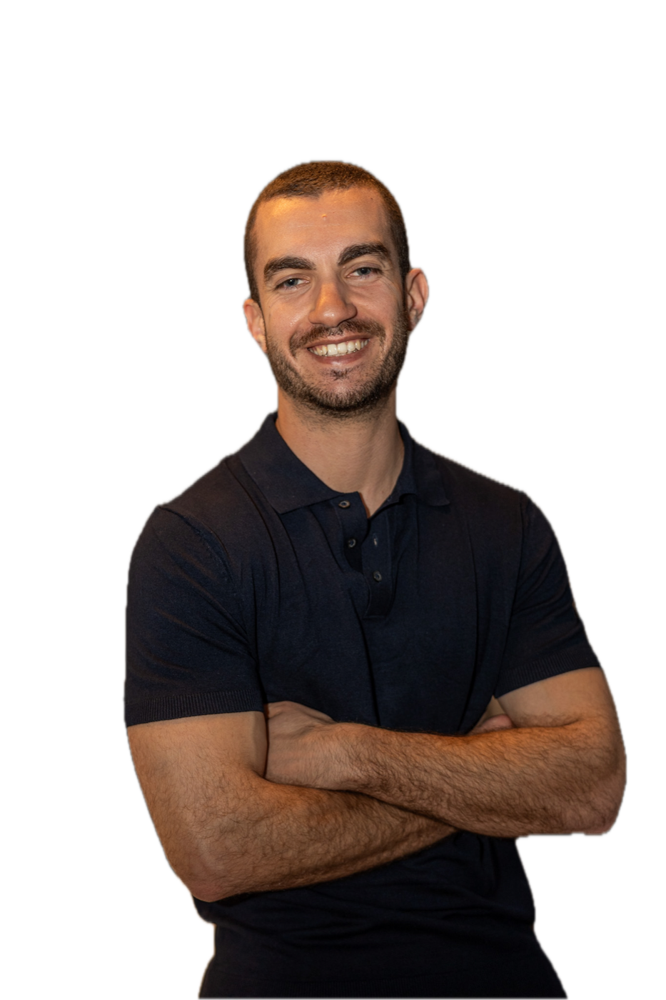

לבניית הרגלים יציבים
3 חודשים
- פגישת פתיחה מעמיקה, עד 60 דקות
- 6 פגישות מעקב, אחת לשבועיים, 30 עד 40 דקות
- תפריט תחליפים דינמי, סל נשנושים יומי ותבניות לסוף השבוע, תוך 48 שעות
- שקילה פעמיים בשבוע וליווי יומי בוואטסאפ
בלי טרנדים, בלי איסורים מיותרים. תזונה מבוססת מדע, שמותאמת לחיים עצמם. ליווי אישי של נתנאל מלכה, דיאטן קליני.

בואו נדבר ←מסלולי הליווי
לבניית הרגלים יציבים
לשינוי עמוק ולשימור לטווח ארוך
פגישה אחת של 60 דקות, בלי ליווי מתמשך
אני דיאטן קליני עם תואר B.Sc. בתזונה קלינית מהפקולטה לחקלאות, ובוגר לימודי המשך בניהול סוכרת באוניברסיטת תל אביב. בקליניקה הפרטית שלי באשדוד אני מלווה כל תהליך באופן אישי ולאורך זמן, ואת הניסיון הקליני אני מביא גם מהעבודה כדיאטן בבית החולים אסותא אשדוד. אני לא מבטיח תוצאות מהירות, אני מבטיח תהליך שאפשר לחיות איתו: תפריט גמיש לפי קבוצות מזון, בלי איסורים בלי סיבה קלינית, וליווי צמוד בין הפגישות.
השיטה
מסגרת קלינית ברורה, בלי לספור כל קלוריה. חמישה עקרונות שמחזיקים את כל התהליך.
תפריט לפי קבוצות מזון. כל מנה אפשר להחליף במנה שקולה מאותה קבוצה, כך שהתפריט משתנה איתכם.
מקום קבוע לנשנוש גמיש של 100 עד 120 קלוריות. הוא חלק מהתוכנית, לא חריגה ממנה.
תבניות מאוזנות ומציאותיות לשישי ושבת. ארוחות משפחתיות נשארות על השולחן, בלי ספירה אובססיבית.
גלוטן וחלב לא יוצאים מהתפריט בלי סיבה קלינית. ההמלצות מבוססות על ספרות מקצועית ועל הבדיקות שלכם.
שקילה פעמיים בשבוע, ליווי יומי בוואטסאפ ופגישה אישית כל שבועיים, בקליניקה באשדוד או בזום.
המלצות מטופלים
אחת המתנות הכי טובות שהייתי יכולה לתת לעצמי!
החל מהמפגשים הפרונטלים ועד הליווי הרציף בווצאפ. הליווי של נתנאל היה יוצא מן הכלל. מאוד מעשיפ ומלא תמיכה ומוטיבציה.
קבלתי גם תוצאות פרקטיות שאפשר לראות ולהרגיש על עצמי אבל יותר חשוב קיבלתי כלים לאורך חיים בריא שהוא ישים ומותאם עבורי שאני יכולה להתמיד בו 🙏🏼
נתא ליווה אותי לתקופה של 3 חודשים שגרמו לי לשינוי מהמם.. בעיקר פנימי וגם כמובן חיצוני אבל המספרים על המשקל לא הם הדבר החשוב מהתהליך איתו אלא ההבנה של יצירת הרגלים חדשים ובריאים ובעיקר מותאמים לי אישית. הבנתי ממה התזונה משמעותית בחיינו ובשילוב של כושר הגעתי לתוצאה שהצבתי ויותר מכך - אני כבר 3 חודשים אחרי הליווי ועדיין שומרת על התוצאה כי פשוט נוצרה שגרה חדשה. וכל זה לא היה קורה בלי נתנאל! האיש והאיש, המענה הסבלני והרצון שלו באמת שאצליח כי התהליך האמיתי הוא שלי והוא כאן לתת את הכלים הנכונים לכך. אז תודה על תקופה שלא אשכח, סליחה על כל הקיטורים בדרך ובהצלחה לכל מי שיבחר בך כמנטור - ההחלטה הכי טובה שעשיתי בשביל עצמי ב2026
נתנאל פשוט אלוף! תוכנית התזונה שלו הותאמה בדיוק לצרכים האישיים שלי. לאורך כל הדרך הוא היה קשוב בצורה יוצאת דופן לכל שאלה ובקשה. ברגעים שהרגשתי שהכל תקוע, הוא ידע להגיד בדיוק את המילה הנכונה, לתמוך ולייצר את השינויים המדויקים בתהליך כדי להמשיך להתקדם. המעקב הצמוד והחיזוק המנטלי שלו היו משמעותיים עבורי ברמות. ממליצה מכל הלב.
עברתי עם נתנאל תהליך מדהים ומשמעותי.
מהשיח המעמיק על האתגרים, דרך בניית תהליך מותאם אישית – הכל נעשה בגובה העיניים, עם הבנה, הכלה וליווי אמיתי לאורך כל הדרך.
בנינו הרגלים, הצלחנו לייצר מערכת יחסים בריאה עם אוכל ולמדתי איך לשלב עומס, חופשות ותקופות מורכבות בלי לאבד איזון. מקצוען אמיתי וחד משמעית הכי טוב בתחום.
ממליצה לכל אחד לבחור בנתנאל להתחיל איתו תהליך בחיים.
מניסיוני עם תזונאים נוספים
אין כמו נתנאל ולכן אני ממליץ עליו בחום.
קשוב, הכי מקצועי שיש, נותן ליווי לאורך התהליך
מאוד איכותי וחשוב לציין שהוא ספורטאי בעצמו ומאמן כושר ויודע ומבין איך לשלב מצויין בין תחום התזונה לעולם הכושר והספורט.
נתנאל כל הזמן מקפיד ללמוד ולהתפתח והידע שהוא מפגין ניכר בתוצאות.
תודה רבה נתנאל ישר כוח 💪
נתחיל מהסוף, ממליצה מאוד מאוד על התהליך עם נתנאל. במיוחד למי שמרגישה שיש לה בלאגן בראש, שלא יודעת כמה באמת צריך לאכול כדי לרדת במשקל ואיך משלבים שגרה עם בילויים, נופש ואפילו תקופות מורכבות.
נתנאל מביא איתו ידע וניסיון רב, יחד עם הסתכלות בריאה, מאוזנת וחיובית על החיים. הוא נותן תפריט התחלתי, אבל גם מלמד איך "לשחק" איתו, איך לבחור נכון ואיך להמשיך להתקדם גם מחוץ למסגרת.
בפעם הראשונה באמת ברור לי איך אמור להיראות היום שאחרי.
הגישה של מאפשרת להבין שאפשר לאכול הכל, זה עניין של בחירה, איזון והקשבה. בזכותו הצלחתי ללמוד לבחור מתוך מקום מודע, בלי לרחם על עצמי ובלי רגשות אשם.
ממליצה בחום לכל מי שמחפשת שינוי אמיתי, שפוי ויציב לאורך זמן ❤️
משאירים פרטים, ואני חוזר אליכם לשיחת התאמה קצרה, בלי התחייבות.